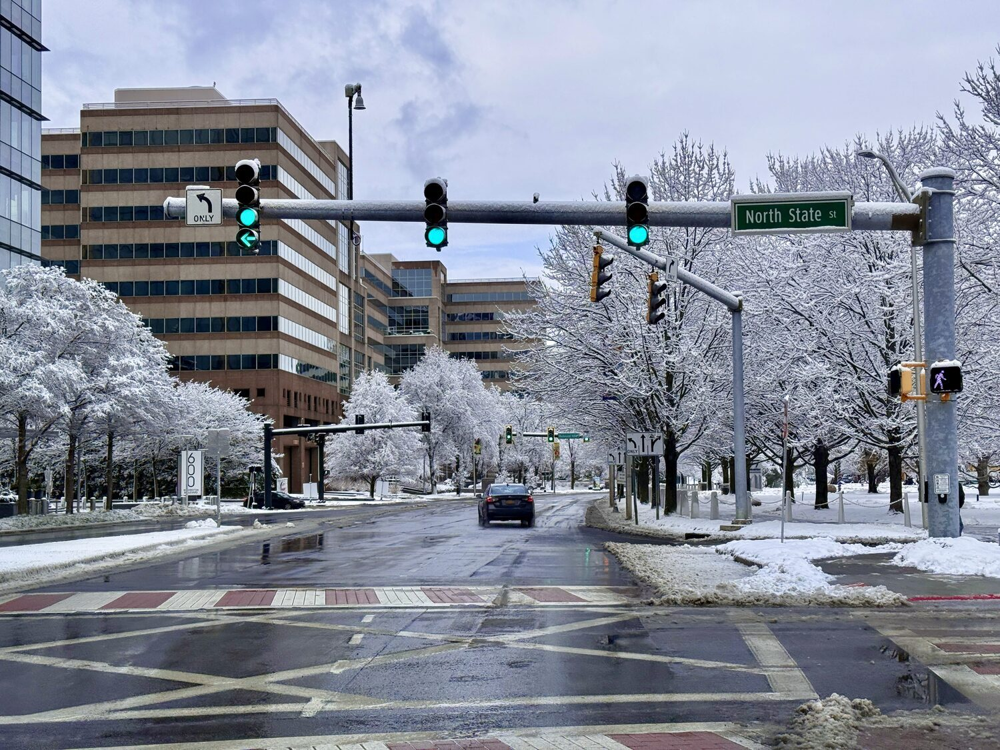

You added "reddit" because you want the real answer, not a brochure. I'm a Stamford real estate agent and I read the same threads you do — here's an honest synthesis of what actual residents say about living here, where the consensus is spot-on, and where a five-year-old comment is steering you wrong.

Reddit's verdict: yes, with eyes open
Ask "is Stamford a good place to live?" on Reddit and the answer is a fairly consistent yes — especially if you're a young professional, an NYC commuter, or a first-time buyer. It's one of the most-recommended landing spots in Fairfield County precisely because it offers city amenities on the express train without Greenwich or Manhattan pricing. In 2025, Connecticut's housing market ranked among the top-performing states nationally for year-over-year price appreciation, driven in large part by continued NYC outmigration to Fairfield County — and Stamford absorbed more of that demand than any other city in the state (Redfin/NAR data, 2025).
What residents genuinely love
- The commute. ~50 minutes express to Grand Central, frequent trains, Amtrak too. The single most-praised feature.
- A real downtown. Walkable, with the Bedford Street restaurant/bar scene and the Harbor Point waterfront — the reason Stamford feels like a small city.
- Jobs. A big corporate base (finance, media, tech) means you're not required to commute into NYC at all.
- Value & diversity. More space for the money than neighboring towns, and a genuinely diverse, food-rich community.
- Water & parks. Cove Island, Cummings Park, and plenty of green space get regular love.
What residents honestly complain about
- Taxes. Property tax plus Connecticut's annual car tax is the #1 gripe from transplants. Real — budget for it.
- Rents up. New luxury towers pushed rents higher; still a relative deal versus NYC, and inventory is real.
- Parking & I-95. Downtown parking and highway traffic are the daily annoyances.
- "Dead downtown" (outdated). An old refrain that the current Bedford Street / Harbor Point scene has largely answered — check the live What's On map before believing it.
The real estate agent's reality check
Reddit is right on the big picture. Where the threads get thin is your specifics: Stamford is a good place to live — but "good" depends entirely on which neighborhood, budget, and commute you're solving for. Downtown/Harbor Point living is a different life than Shippan or North Stamford. Whether the taxes net out in your favor depends on the exact home. That's the part a generic thread can't answer and I can. Start with the neighborhoods guide or the current market numbers, then tell me what you're after.
Read the source threads
For the raw discussion, search "is Stamford a good place to live" on r/Stamford and r/Connecticut. This page synthesizes that consensus honestly — it doesn't replace reading it yourself.
Frequently Asked Questions
Is Stamford, CT a good place to live for young professionals?
Yes — it's one of the most popular landing spots for young professionals leaving NYC. The Harbor Point and Downtown apartment buildings give you a social, urban lifestyle; the express train keeps Manhattan accessible for work and weekends; and the salary-to-rent ratio is meaningfully better than the city. Many young professionals rent here for 2–3 years and then buy once they know which neighborhood fits them.
Is Stamford good for families?
Yes, with some nuance. Families on Reddit consistently recommend Shippan, Springdale, Glenbrook, North Stamford, and the Cove neighborhoods for their quieter, residential character and proximity to good schools. The public school system is large and varied — researching specific schools rather than the district overall is the move. Beaches, parks, and family-friendly events are genuine pluses. See the full living guide →
What are people on Reddit saying about Stamford in 2026?
The 2025–2026 threads on r/Stamford reflect a city that's still growing. The Harbor Point waterfront and Bedford Street restaurant scene get consistent praise. The most active complaints remain parking downtown, Connecticut's car tax (a persistent Reddit grievance statewide), and rising rents in the luxury buildings. The "dead downtown" criticism that dominated threads from 2018–2022 is largely absent now.
Is Stamford, CT safer than New York City?
Stamford has a significantly lower violent crime rate than New York City overall. Like any city, specific neighborhoods vary — downtown and Harbor Point are generally considered very safe; parts of the South End and areas near Route 1 have higher incident rates. Reddit users consistently advise newcomers to check block-level data for their specific apartment or home rather than relying on citywide numbers.